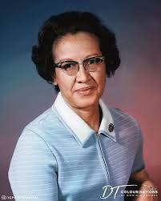
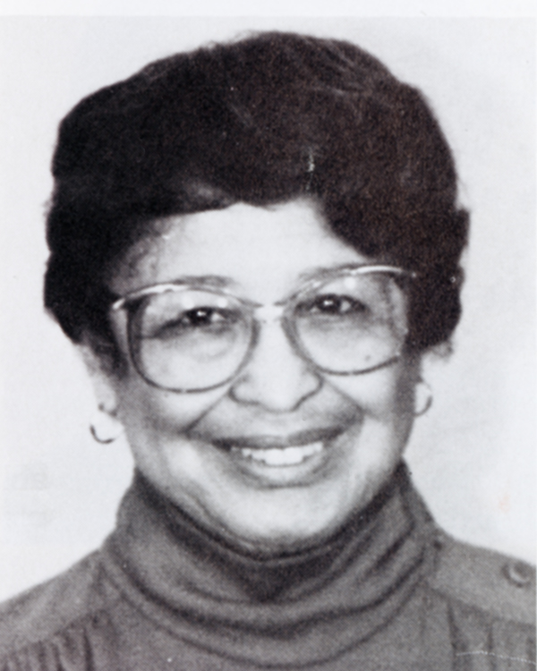
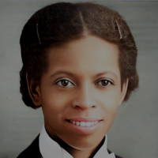

Nossas Mulheres:

Katherine Johnson
- Viveu: 1918 - 2020.
- Educação: Graduação pela Universidade da Virgínia Ocidental.
- Foco: Matemática e Física, enfrentando barreiras raciais e de gênero na área científica.
- Ingressou: 1953, no departamento de navegação da NACA (precursora da NASA).
- Cálculo de trajetórias e janelas de lançamento para missões como Projeto Mercury, Apollo 11 e programas de ônibus espaciais.
- Legado: Trabalho pioneiro na computação e exploração espacial, servindo como modelo para mulheres e negras na ciência.
- Medalha Presidencial da Liberdade (2015): Maior honraria civil dos EUA.
- Impacto: Inspirou gerações com sua trajetória em um campo dominado por homens brancos.
- Homenagens: Incluída na lista das 100 mulheres mais inspiradoras do mundo (2016).

Jeanne Spurlock
- Viveu: 1921 - 1999.
- Educação: Graduação pela Roosevelt University (1943) e doutorado em medicina pela Howard University College of Medicine (1947).
- Teve obras sobre: Impactos do racismo, sexismo e pobreza na saúde mental.
- Reconhecimento: Primeira mulher e afro-americana a receber o Edward A. Strecker Award (1971).
- Homenagens: Bolsas e prêmios criados em seu nome para apoiar estudantes e profissionais na área de psiquiatria.
Jaqueline Goes de Jesus
- Nascida: São Paulo, Brasil.
- Educação: Graduação em Biomedicina pela Universidade de São Paulo (USP) e doutorado em Genética e Biologia Molecular, com foco em sequenciamento de DNA.
- Sequenciamento do SARS-CoV-2: Em 2020, liderou a equipe que sequenciou o primeiro genoma do coronavírus no Brasil.
- Produziu artigos em revistas científicas de alto impacto e participou de iniciativas globais de compartilhamento de dados durante a pandemia.
- Mentoria: Envolvimento em iniciativas que incentivam jovens, especialmente mulheres e minorias, a ingressar na ciência.
- Prêmios: Eleita uma das 100 Mulheres Mais Inspiradoras do Mundo pela BBC em 2021.
- Legado: Liderança em pesquisa, formação de novos cientistas e contribuição significativa para a valorização da ciência na sociedade.

Enedina Alves marques
- Viveu: 1913 - 1981.
- Educação: Primeira mulher negra a se formar em Engenharia Civil no Brasil, pela Universidade Federal do Paraná (UFPR), em 1945.
- Reconhecimento: Destacou-se por sua competência técnica em uma profissão dominada por homens brancos.
- Pioneira no ensino de Engenharia no Brasil, como professora na UFPR.
- Inspirou mulheres e negros a seguirem carreiras na área, rompendo barreiras sociais e acadêmicas.
- Símbolo de resistência contra o racismo e o sexismo.
- Referência histórica como pioneira da Engenharia no Brasil, lembrada como exemplo de superação e inspiração para futuras gerações.